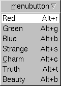

Fl_Menu_ | +----Fl_Menu_Button
#include <FL/Fl_Menu_Button.H>

Normally any mouse button will pop up a menu and it is lined up below the button as shown in the picture. However an Fl_Menu_Button may also control a pop-up menu. This is done by setting the type() , see below.
The menu will also pop up in response to shortcuts indicated by putting a '&' character in the label().
Typing the shortcut() of any of the menu items will cause callbacks exactly the same as when you pick the item with the mouse. The '&' character in menu item names are only looked at when the menu is popped up, however.
When the user picks an item off the menu, the item's callback is done with the menu_button as the Fl_Widget* argument. If the item does not have a callback the menu_button's callback is done instead.
The constructor sets menu() to NULL. See Fl_Menu_ for the methods to set or change the menu.
A popup menu button is invisible and does not interfere with any events other than the mouse button specified (and any shortcuts). The widget can be stretched to cover all your other widgets by putting it last in the hierarchy so it is "on top". You can also make several widgets covering different areas for context-sensitive popup menus.
The popup menus appear with the cursor pointing at the previously selected item. This is a feature. If you don't like it, do value(0) after the menu items are picked to forget the current item.